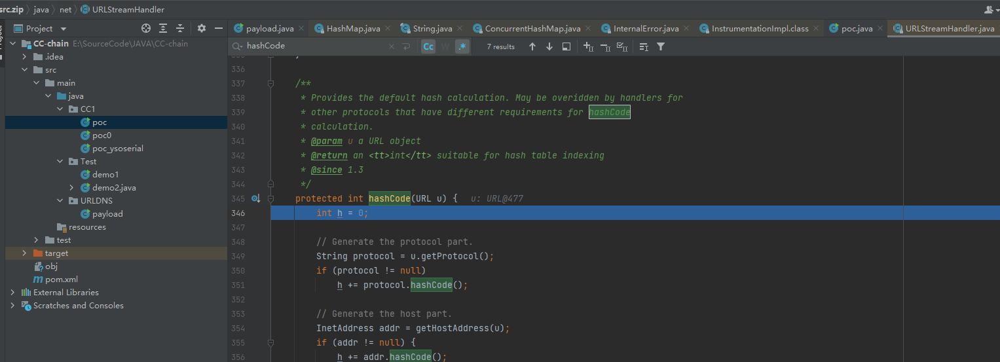
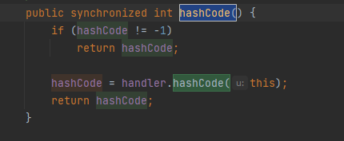
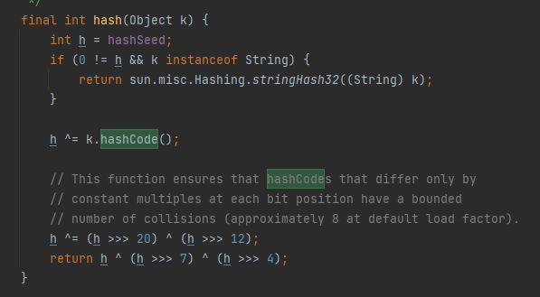
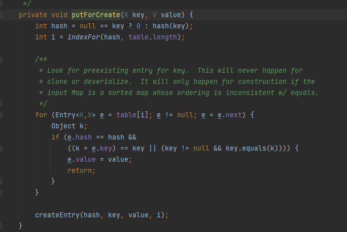
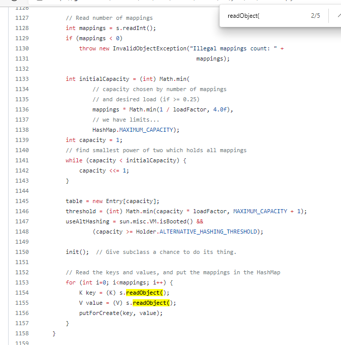
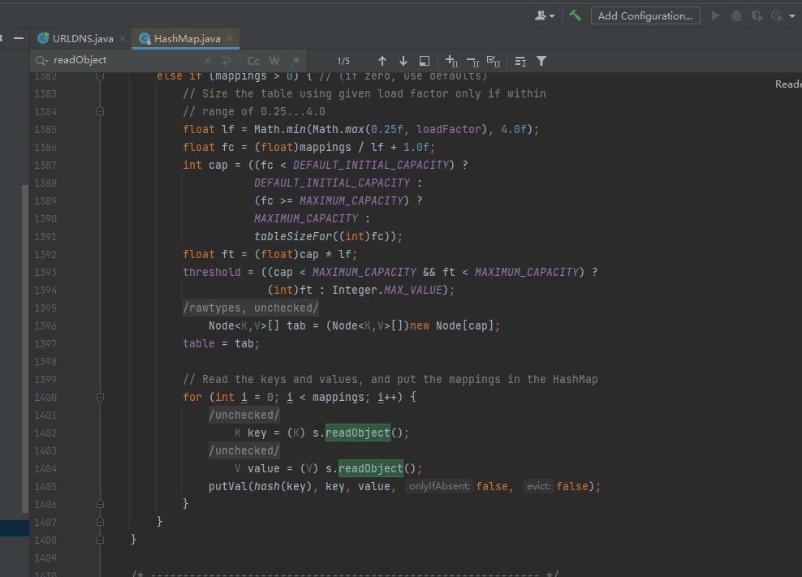
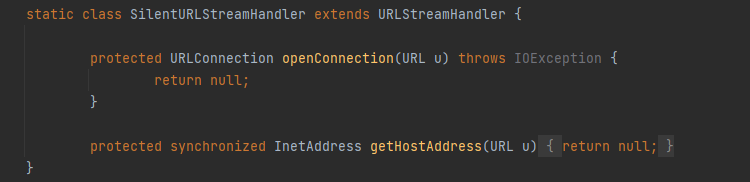

java反序列化-URL链
前言
文章分为四个部分，第一部分URL链整体流程，讲URL链的完整调用。第二部分问题，是我在学习过程中遇到的问题和解决方法。
第三部分是思考，是学习之后的反思感悟。第四部分是文章参考，是我在学习时看的一些文章，以及这些文章各自的特点。
URL链整体流程
HashMap.readObject() -> HashMap.putVal() -> HashMap.hash() -> URL.hashCode() -> URLStreamHandler.hashCode()
注：在jdk1.7中，HashMap.putVal()为HashMap.putForCreate()

此处为URLStreamHandler的第354行，getHostAddress方法就是发起dns查询的触发点。

在URL类中，有一个hashCode方法，当hashCode变量为-1时，会去调用handler.hashCode，此处的handler为URLStreamHandler类。

在HashMap中，有一个hash方法，调用了hashCode方法，可以看到k的类型是Object，如果可以将k控制为URL类，就可以触发URLStreamHandler的HashCode方法。

在HashMap中，有一个putForCreate方法，可以看到方法的第一行使用了hash方法。观察到hash方法的参数为key，如果能控制key为URL类，就可以在hash方法中，去触发URL的hashCode方法。

在HashMap的readObject方法中，第1156行可以看到putForCreate方法。

在jdk1.8中，触发hash方法的时putVal方法，可以看到其中一个参数为hash(key)
问题
ysoserial为什么要需要通过反射将hashCode设置为-1
前面提到过，在URL类的hashCode方法中，只有hashCode为-1时，才会去调用handler.hashCode方法。
直接修改二进制payload中的dnslog地址，是否会影响payload使用？
只做过一个简单的测试，将dnslgo地址换成一个相等长度，并且格式相同的dnslog地址，payload可以正常使用。
ysoserial的自定义URLStreamHandler是起什么作用？

在生成payload的过程中，是会触发hash方法的，为了防止序列化时发起dns lookup，通过自定义URLStreamHandler类，使得getHostAddress方法返回null，这样就不会在生成payload的过程中，发起dns lookup。
tips：windows下，可以使用ipconfig/flushdns清除dns缓存。
在调试时，为何会在一开始出现两次URLStreamHandler:hashCode方法的调用？
那两次调用应该是IDEA的debug模式通过URLClassload去调用自己的class。
(っ °Д °;)っ 很坑，一度卡到了我的思路
反序列化时，要如何调试进入hashmap的readObject方法？
大概流程就是ObjectInputStream:readObject方法调用了readObject0，然后去读取字节流，获取类，然后使用反射去调用类的readObject方法。
文章参考
https://www.freebuf.com/articles/web/275842.html 分析了链中每个函数。
https://xz.aliyun.com/t/4761 探究从ObjectOutputStream:readObject方法如何到达反序列化类的readObject方法。
https://xz.aliyun.com/t/9417#toc-2
之前有点奇怪，为什么有的文章写的是putVal，而我调试时是putForCreate，现在明白了，他们看的是jdk1.8，我看的是jdk1.7
http://wjlshare.com/archives/1493
提到了yso为何会用自定义的handler，有一处细节，URL的handler变量使用的transient修饰，在序列化时并不会被一起序列化。
https://rmb122.com/2020/01/20/ysoserial-URLDNS-CommonsCollectionsX-%E5%88%86%E6%9E%90/
可以理解为, 在序列化 HashMap 类的对象时, 为了减小序列化后的大小, 并没有将整个哈希表保存进去, 而是仅仅保存了所有内部存储的 key 和 value. 所以在反序列化时, 需要重新计算所有 key 的 hash, 然后与 value 一起放入哈希表中. 而恰好, URL 这个对象计算 hash 的过程中用了 getHostAddress 查询了 URL 的主机地址, 自然需要发出 DNS 请求.
很有意思的角度
思考
- 在这次调试的过程中，我是先看了ysoserial中URLDNSpayload的注释里的调用链，然后自己尝试编写payload。由于dns有缓存机制，一开始很难去判断自己的payload是不是对的。最后还是看了ysoserial的payload，知道了需要通过反射设置hashCode来触发和自定义handler来避免序列化时的dns lookup.
- 在这次学习中发现自己只关注了方法的调用，而忽略了方法周围的逻辑。光是找方法调用点是不行的，还需要考虑方法周围的逻辑，是否会对方法的触发产生影响。
最后问题
是先有sink还是先有source？